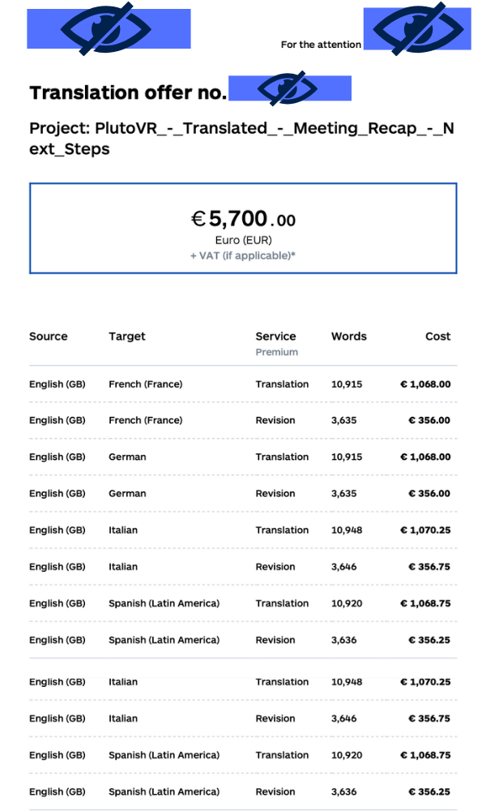
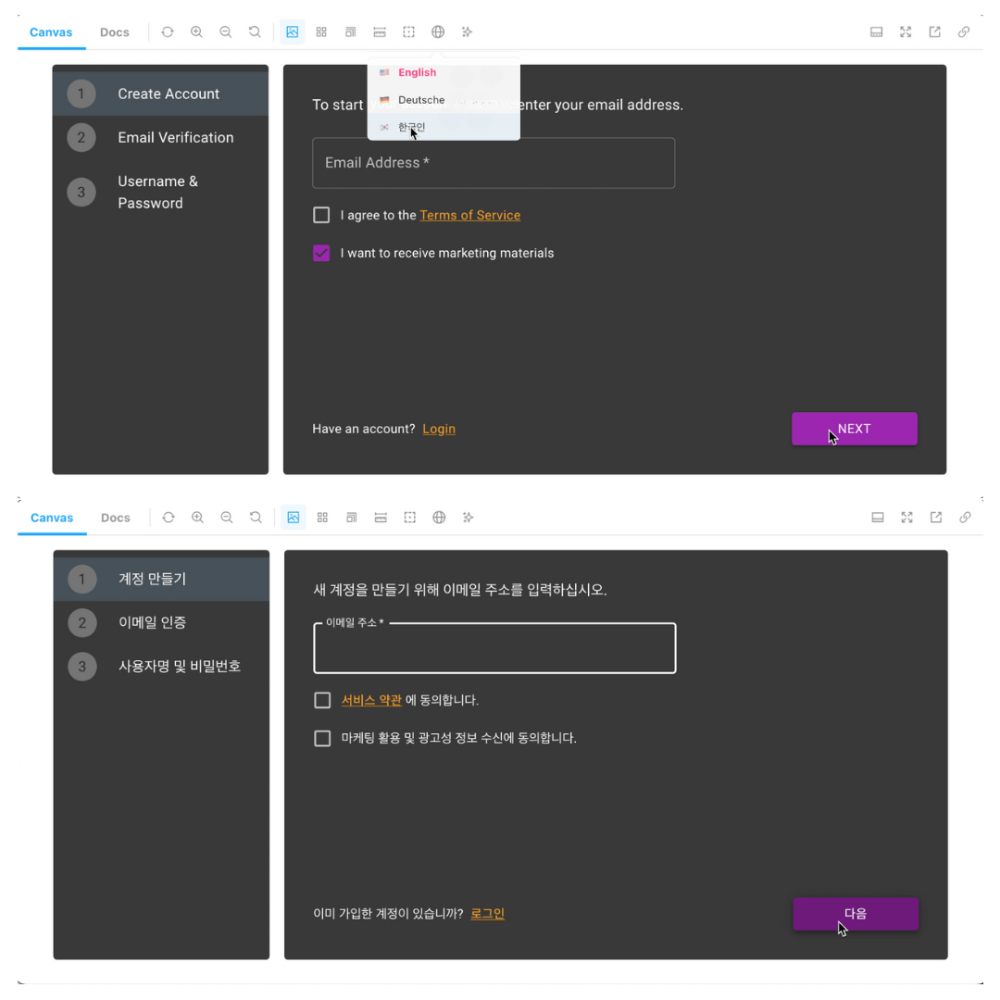

Scaling Localization & Internationalization for Pluto VR
Project Overview
Pluto VR needed a scalable and developer-friendly workflow to expand our reach as we engaged with worldwide VR users.
Role
Led research, tool selection, and implementation to create a scalable, developer-friendly localization workflow for a React.js project.
The Challenge
- 🛠 Technical Compatibility: Needed a TMS and i18n library that worked with React.js.
- 🌍 Translation Accuracy: Poor machine translations required manual review.
- 📄 Developer Accuracy: Prior process required duplicate entries in each translation file and subjective JSON hierarchy structure of phrases.
- 🏗 Developer Training: Engineers lacked familiarity with localization best practices.
- 🔍 UI Context for Translators: Without UI previews, translations lacked accuracy.

Process
Step 1. Research & Tool Selection
Compare translation management service (TMS) options

Review translation services
Quote of translation costs
Step 2. Implementing & Testing Localization
Screenshot of login page localization using Storybook
Step 3. Documentation & Training
- ✅ Translation Flow
- ✅ Translation Task Creations
- ✅ Translator/Developer Guide to Using Storybook
Documentation to help translators find visual context for phrases
Outcomes
- ✅ Faster localization process with seamless TMS integration
- ✅ Automates updates to JSON translation files through formatjs
- ✅ Improved translation accuracy through translator training & UI previews
- ✅ Engineers onboarded 2x faster with structured documentation & training

Formatjs updates translation files by creating a unique key and phrase pair

New flowchart process enables automated processes that hand off responsibilities of code and translations.
Key Takeaways
- Good localization is not just technical—it requires translator context & collaboration
- Training and documentation are critical for adoption in cross-functional teams
- A structured research approach (vendor evaluation, usability testing) ensures better tool selection